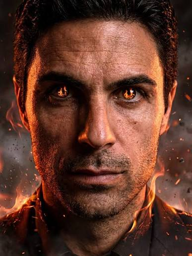
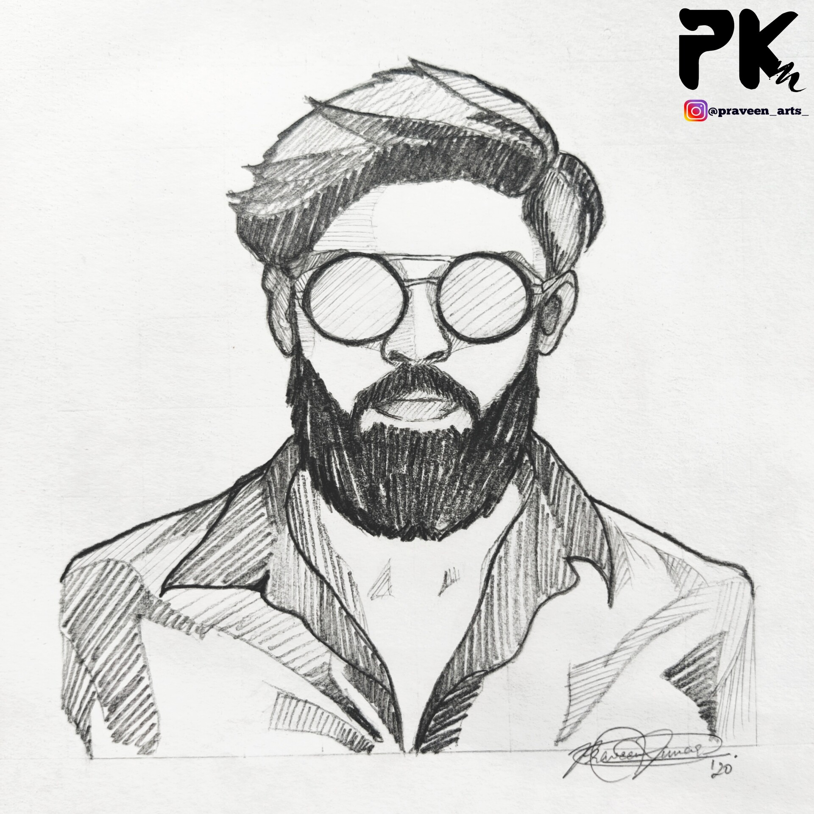
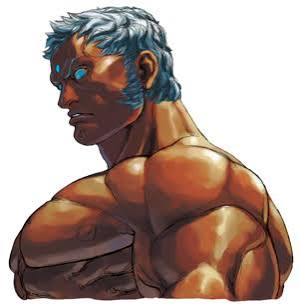
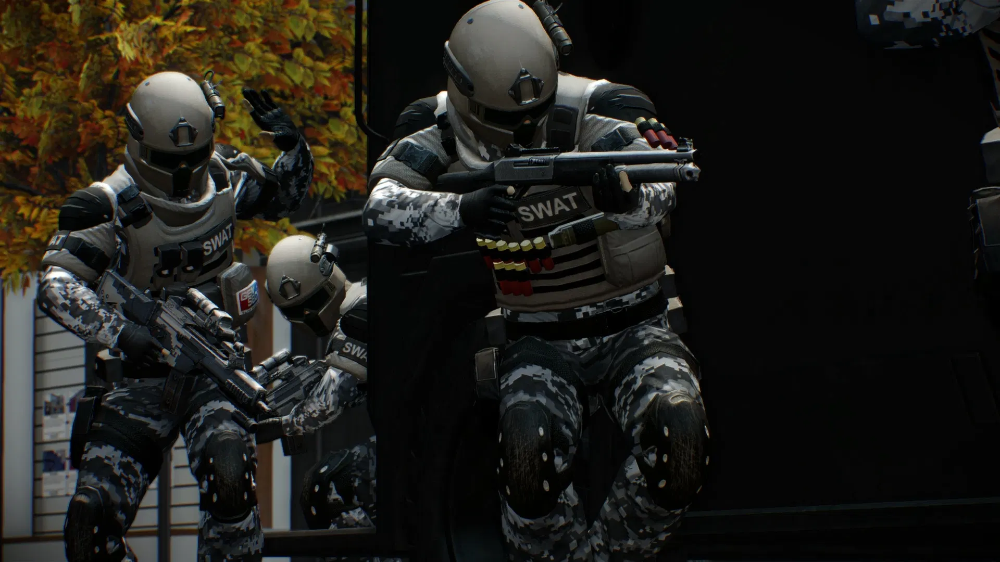
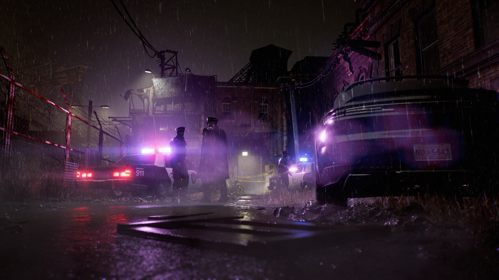
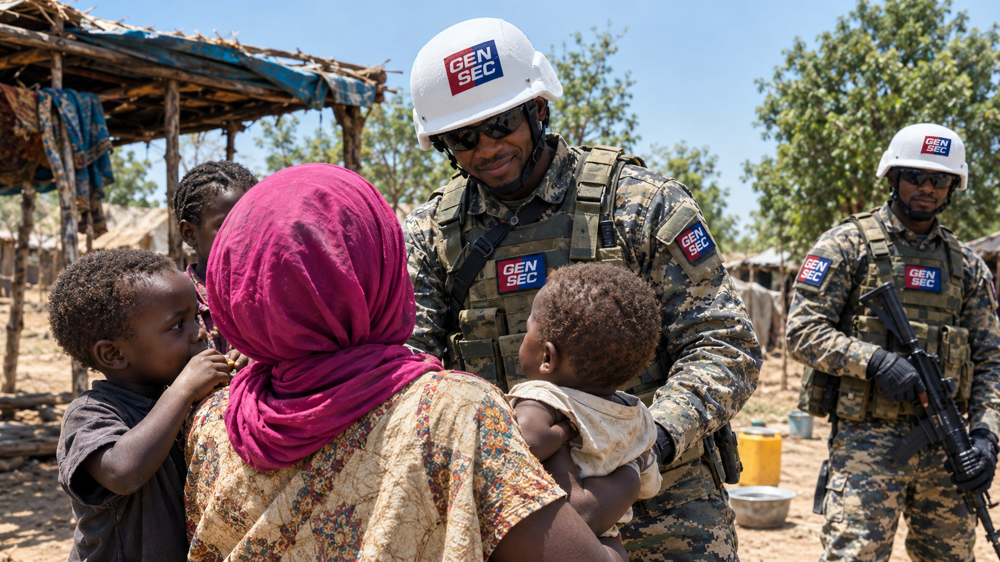

Nossos Projetos
Campanha da África — Conservação e Proteção
Movimento voltado para a salvaguarda da biodiversidade, desenvolvimento comunitário e redução da criminalidade em regiões afetadas por pirataria e terrorismo.
1. Proteção da Fauna
Patrulhamento contra a caça ilegal e preservação de habitats naturais.
2. Assistência Humanitária
Apoio social e infraestrutura para vilarejos vulneráveis.
3. Segurança Comunitária
Combate preventivo contra ações de pirataria e grupos extremistas.

Registros de Monitoramento de Detentos
* Todos os dados abaixo são oficiais.

Mykel Maasshouli Ar-Tet-A
Situação: Acorrentado em vísceras de Urubu
Descrição: Monitorado pelo maior atentado terrorista ao futebol mundial, em 30 de maio de 2025
Obs: Transferência pendente para complexo na Masmorra.
Lorde Oruam Maldade
Situação: Processo em Julgamento
Descrição: principal suspeito por matar Mano Costa e chefe da Gangue do Cão
Obs: Sem histórico de reincidência registrado.

Meton Alves
Situação: no Complexo da Fazendinha
Descrição: terceiro maior Hacker da atualidade, procurado em mais de 114 denúncias cibernéticas
Obs: ele não é deste mundo.
Registros de Indivíduos Procurados
* Registros ilustrativos para exercícios de segurança.

Alvo: MattWilliams
Motivo do Registro: Liderança de rede de pirataria marítima internacional e conspiracionista mundial, líder dos "Garras".
Situação Atual: Foragido — Alerta Amarelo

Joséfaldo, rei da Mongolia
Motivo do Registro: ter começado seu reinado de terror em 2004; ter invadido o kazakhistão em 2019 e declarar guerra ao mundo em 2024.
Situação Atual: Sentença de morte
Galeria de Projetos

Operação Corredor Seguro
Invasão do complexo pirata na alemanha.

Operação RedMoney
a investigação que encontrou os 100 milhões roubados do banco da Argentina

Ajuda Humanitária na Ethiopia
Ações permanentes de ajuda á nação.